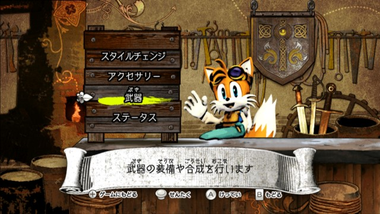
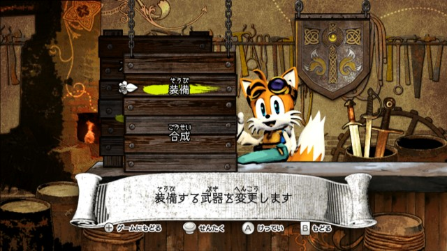
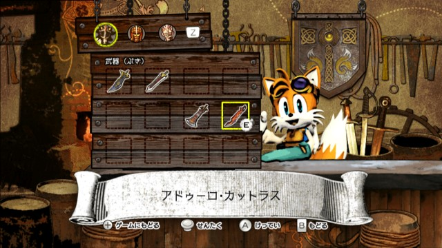

🏠 首頁
📁 Sonic and the Black Knight
SBK的使用武器問題
👤 kaven0001
🕐 2009-05-17 08:51:16
我想問 SBK中 角色使用的武器 要怎麼變換阿((好像是從鍛冶屋去換
因為常常看到有人拿著不同的武器 覺得很訝異 請問各為大大 怎麼換呀??
謝謝大大 我已經知道怎麼用了 謝謝[:smile43:]
[
本文最後由 kaven0001 於 2009/5/17 07:15 PM 編輯
]
👤 yihui
🕐 2009-05-17 09:17:08
以下點圖放大

附件: sbb1.jpg
在鍛冶屋中選第四個選項「武器」

附件: sbb2.jpg
進入後選擇裝備

附件: sbb3.jpg
接下來就會出現武器的清單，來做武器的更換
按「Z」切換角色
前提這些武器都是要用合成的
可參考圖2
[
本文最後由 yihui 於 2009/5/17 05:20 PM 編輯
]